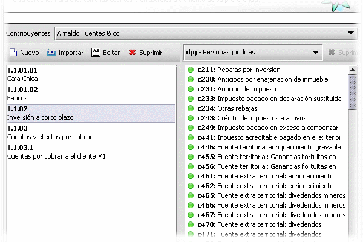
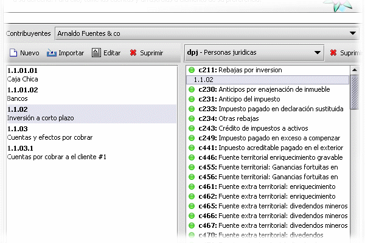

Asociación Entrada contable >> secciones
Describe los pasos para asociar una entrada contables con alguna de las secciones dentro de una forma.
- Haga clic en la opción contabilidad/Clio.
- Seleccione el contribuyente con el cual desea trabajar. Esto actualizara la lista de cuentas contables parametrizadas para este.
- haga clic sobre la entrada contable que desea asociar. Supongamos que seleccionamos

- Ahora, como esta cuenta representa las inversiones que se realizan en un periodo menor que el ejercicio de la compañía, entonces, podemos asociarla con la sección 211: Rebajas por inversión. Para ello,
- Ubicamos la sección, seleccionamos la cuenta y sin soltar el botón del ratón la arrastramos hasta la sección de interés, una vez allí, se libera el pulsador del ratón y la cuenta queda asociada a la sección como se muestra en la figura

Con esto ya a asociado una entrada contable a una sección.
Nota:
Recuerde que existen distintos tipos de cálculos según la característica de cada sección.
Ver
Editor de forma
Transacciones
Contabilidad/Clio